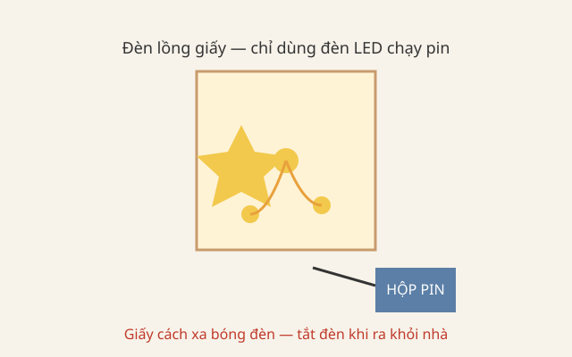

Tự làm đèn ngủ giấy và dây LED cho phòng ngủ nhỏ
Tác giả: Ruler
Đèn ngủ cho phòng nhỏ không cần sáng mạnh, mà cần sáng dịu và đặt đúng chỗ. Một chiếc đèn ngủ giấy tự làm có thể làm được việc đó, vì giấy làm ánh sáng mềm hơn, và bạn có thể chọn màu giấy hợp với phòng của mình. Nhưng giấy cũng là vật liệu dễ cháy, vì vậy đèn ngủ giấy chỉ an toàn khi bạn dùng đúng loại bóng đèn. Bài viết này chỉ nói về đèn ngủ giấy dùng dây đèn LED chạy pin hoặc bóng đèn LED nhỏ. Bài không hướng dẫn dùng bóng đèn sợi đốt hay bóng đèn halogen gần giấy, và không hướng dẫn đấu nối điện trực tiếp vào nguồn điện trong nhà.
Bài viết này cũng không nói về cách cắm hoa hay trồng cây cảnh trong phòng ngủ, vì đó là chủ đề của hai website khác trong hệ thống. Bài cũng không nói về cách làm kệ sách hay trang trí tường nhà thuê chi tiết, vì hai chủ đề đó đã có bài riêng trong website này.
Vì sao chỉ dùng đèn LED cho đèn giấy
Đèn LED dây là nguồn sáng phù hợp nhất cho các dự án đèn giấy, vì đèn LED dây linh hoạt, tiêu thụ ít điện năng và không tỏa nhiều nhiệt, phù hợp để đặt bên trong các vật liệu dễ cháy như giấy và vải. Hai nguồn hướng dẫn tự làm đèn trang trí phòng ngủ được dẫn cuối bài đều nêu điểm này: bạn nên dùng đèn LED dây hoặc bóng đèn LED nhỏ, và nên tránh dùng vật liệu dễ cháy gần nguồn nhiệt nếu không có biện pháp cách nhiệt phù hợp.
Một nguồn hướng dẫn khác về cách làm chao đèn giấy cũng nêu rõ: chao đèn giấy phải dùng bóng đèn LED tỏa nhiệt thấp, không dùng bóng đèn sợi đốt hay bóng đèn halogen, vì hai loại bóng này tỏa nhiệt đủ để làm giấy bị cháy xém hoặc bắt lửa. Bài viết này theo đúng nguyên tắc đó: với đèn giấy, bạn chỉ dùng đèn LED, và bạn không dùng bất cứ loại bóng đèn nào khác.
Bạn cũng nên chọn dây đèn LED chạy pin cho đèn ngủ giấy, thay vì dây đèn cắm điện trực tiếp, nếu bạn mới làm lần đầu. Dây đèn chạy pin dễ lắp, dễ tắt, và bạn không phải lo về dây điện dài trong phòng ngủ. Bạn nên chọn dây đèn có công tắc dễ với tới, và nên chọn ánh sáng ấm thay vì ánh sáng trắng quá chói, vì ánh sáng ấm hợp với phòng ngủ hơn.
Chọn giấy và khung trước khi chọn mẫu đèn
Giấy làm đèn ngủ nên là giấy bìa cứng hoặc giấy thủ công dày, vì giấy quá mỏng dễ rách và khó giữ hình dạng. Bạn nên chọn giấy có màu sáng hoặc màu ấm, để ánh sáng LED xuyên qua giấy tạo cảm giác dịu. Bạn nên tránh giấy quá tối, vì giấy tối sẽ làm ánh sáng bị mờ và bạn sẽ phải dùng dây đèn sáng hơn mới đủ sáng.
Khung đèn là phần giữ cho giấy không bị xẹp xuống. Bạn nên dựng khung xong rồi mới cắt giấy, vì cắt giấy theo khung có sẵn dễ vừa hơn là cắt giấy trước rồi tìm cách làm khung vừa với giấy. Khung có thể làm bằng que tre, thanh gỗ mỏng hoặc dây kẽm uốn thành vòng, tùy theo hình đèn bạn chọn. Với đèn hình trụ, bạn cần hai vòng tròn làm miệng trên và đáy dưới, nối với nhau bằng vài thanh dọc. Với đèn hình hộp, bạn cần bốn thanh đứng ở bốn góc, nối với nhau bằng khung vuông trên và dưới. Bạn nên kiểm tra khung đứng vững trên mặt bàn trước khi dán giấy, vì khung nghiêng sẽ làm giấy bị lệch theo.
Bạn cũng cần chuẩn bị kéo, dao rọc giấy, keo dán, thước và bút chì. Bạn nên làm đèn ở nơi đủ sáng và có mặt phẳng để cắt giấy. Bạn nên cắt giấy chậm và cẩn thận, vì giấy đã cắt sai khó sửa lại được.
Ba mẫu đèn khác nhau theo cách đặt
Mẫu thứ nhất là đèn lồng giấy hình hộp có nắp, đặt trên bàn đầu giường. Mẫu này bắt đầu từ khung, không bắt đầu từ giấy: bạn cần bốn thanh gỗ mỏng dài bằng chiều cao đèn muốn làm, hai khung vuông nhỏ bằng que tre làm miệng trên và đáy dưới, giấy bìa cứng, keo, thước, bút chì và dây đèn LED chạy pin. Bạn nên dựng khung trước: dán bốn thanh gỗ đứng vào bốn góc của khung vuông đáy, rồi gắn khung vuông miệng lên đầu bốn thanh gỗ, để khung hộp đứng vững trước khi chạm tới giấy. Sau đó bạn đo từng mặt của khung vừa dựng, cắt bốn tấm giấy theo đúng số đo đó, mỗi tấm rộng hơn mặt khung một chút để có mép dán. Trước khi dán, bạn dùng dụng cụ bấm lỗ để bấm một hàng lỗ tròn nhỏ trên từng tấm giấy — khi đèn bật, ánh sáng sẽ lọt qua các lỗ này và tạo thành các chấm sáng trên tường. Bạn dán từng tấm giấy vào khung, mép giấy chồng lên thanh gỗ để keo bám chắc, rồi làm nắp rời: cắt một tấm giấy lớn hơn miệng hộp một chút, gấp mép xuống để nắp đậy khít mà vẫn nhấc ra được. Bạn đặt dây đèn LED vào trong hộp sau cùng, xếp dây thành vòng ở đáy hộp, để hộp pin ngoài đèn và luồn dây qua một lỗ nhỏ ở tấm đáy. Bạn bật thử để kiểm tra độ sáng qua các lỗ đã bấm, rồi đậy nắp lại. Bạn nên đặt đèn lồng trên một mặt phẳng chắc chắn, xa rèm và xa vải.
Mẫu thứ hai là chao đèn hình trụ bọc khung đèn cũ. Mẫu này hợp với người đã có khung đèn cũ nhưng chao đèn đã rách hoặc đã cũ. Bạn cần khung đèn cũ, giấy bìa hoặc giấy can, keo và kéo. Bạn nên đo chu vi và chiều cao của khung, cắt giấy theo kích thước đã đo rồi dán giấy quanh khung. Bạn nên để giấy thừa một chút ở mép trên và mép dưới để dán cho chắc. Bạn nên dùng bóng đèn LED cho khung đèn này, và nên kiểm tra xem giấy có chạm vào bóng đèn hay không. Nếu giấy chạm vào bóng đèn, bạn nên làm chao rộng hơn hoặc chọn bóng đèn nhỏ hơn.
Mẫu thứ ba là hộp giấy cắt họa tiết đặt trên kệ. Bạn cần hộp giấy cứng, dao rọc giấy, keo và dây đèn LED chạy pin. Bạn nên vẽ họa tiết lên hộp giấy, cắt họa tiết bằng dao rọc giấy, rồi luồn dây đèn LED vào trong hộp. Khi bật đèn, ánh sáng sẽ xuyên qua các họa tiết đã cắt, tạo thành hình sáng trên tường. Mẫu này hợp với phòng ngủ nhỏ vì hộp giấy nhẹ và dễ di chuyển. Bạn nên đặt hộp giấy ở nơi khô ráo, xa nguồn nước và xa tầm tay trẻ nhỏ.
Ba mẫu trên khác nhau ở cách đặt và cách làm khung, nhưng đều dùng chung một nguyên tắc an toàn: chỉ dùng đèn LED, giữ giấy cách xa bóng đèn, và tắt đèn khi bạn ra khỏi nhà.
Cách chọn dây đèn LED cho phòng ngủ nhỏ
Bạn nên chọn dây đèn LED chạy pin có công tắc riêng, để bạn có thể tắt đèn nhanh khi cần. Bạn nên chọn dây đèn có ánh sáng ấm, vì ánh sáng ấm làm phòng ngủ có cảm giác dễ chịu hơn ánh sáng trắng. Bạn nên chọn dây đèn có độ dài vừa với đèn bạn làm, đừng chọn dây quá dài rồi cuộn dây thừa vào trong đèn, vì dây thừa vừa làm đèn khó sắp xếp vừa che mất ánh sáng.
Bạn nên kiểm tra dây đèn trước khi luồn vào đèn giấy. Bạn nên bật dây đèn thử, nhìn xem có bóng nào không sáng hay không, và kiểm tra xem dây có bị đứt hay hở hay không. Nếu dây đèn bị hở, bạn không nên dùng dây đó cho đèn giấy, mà nên thay dây mới. Bạn cũng nên kiểm tra pin của dây đèn, và nên dùng pin mới cho đèn ngủ, thay vì dùng pin cũ đã yếu.
Bạn nên đặt hộp pin ở vị trí dễ thay pin, và nên để hộp pin ngoài đèn giấy nếu có thể, để bạn không phải tháo đèn ra mỗi khi thay pin. Nếu hộp pin phải đặt trong đèn, bạn nên đặt hộp pin ở đáy đèn, nơi bạn có thể lấy ra dễ dàng.
An toàn là phần quan trọng nhất của bài viết này
Giấy là vật liệu dễ cháy, vì vậy an toàn phải được đặt lên trước thẩm mỹ. Bạn nên nhớ bốn nguyên tắc sau. Thứ nhất, chỉ dùng đèn LED cho đèn giấy, không dùng bóng đèn sợi đốt hay bóng đèn halogen. Thứ hai, giữ giấy cách xa bóng đèn, không để giấy chạm trực tiếp vào bóng đèn. Thứ ba, không bật đèn giấy khi bạn ra khỏi nhà hoặc khi bạn đi ngủ và không thể trông chừng đèn. Thứ tư, không đặt đèn giấy gần rèm, vải, giấy khác và các vật liệu dễ cháy.
Bạn nên kiểm tra đèn sau khi làm xong bằng cách bật đèn trong một thời gian ngắn, sờ thử bề mặt giấy xem có nóng lên hay không. Nếu giấy nóng lên rõ rệt, bạn nên tắt đèn ngay và kiểm tra lại loại bóng đèn và khoảng cách giữa giấy và bóng đèn. Bạn không nên cố dùng đèn khi giấy đã nóng, vì giấy nóng là dấu hiệu đèn không an toàn.
Bạn cũng nên kiểm tra dây đèn định kỳ. Bạn nên nhìn xem dây có bị đứt, bị hở hay bị kẹp vào khung đèn hay không. Nếu dây đèn có mùi khét hoặc có dấu hiệu cháy xém, bạn nên tắt đèn ngay, tháo dây đèn ra và không dùng lại dây đó. Bạn nên để đèn giấy ở nơi trẻ nhỏ không với tới, và nên dạy trẻ không tự bật đèn giấy khi không có người lớn ở nhà.
Đặt đèn ở đâu trong phòng ngủ nhỏ
Đèn ngủ giấy nên đặt ở nơi bạn có thể nhìn thấy và với tới dễ dàng, nhưng không nên đặt ở nơi bạn dễ va vào khi đi lại trong bóng tối. Bạn nên đặt đèn trên bàn đầu giường, trên kệ thấp hoặc trên bàn làm việc trong phòng ngủ. Bạn không nên đặt đèn trên sàn nhà, vì bạn có thể đá vào đèn khi đi lại, và bạn không nên đặt đèn ngay trên đầu giường, vì đèn có thể rơi xuống khi bạn ngủ.
Bạn nên đặt đèn xa rèm cửa và xa quần áo treo trong phòng. Bạn nên đặt đèn ở nơi khô ráo, tránh đặt đèn gần cửa sổ hay bị hắt mưa. Bạn nên đặt đèn ở nơi có đủ không gian xung quanh, để không khí có thể lưu thông quanh đèn và giấy không bị nóng lên vì đặt sát tường.
Bảo quản đèn giấy để dùng được lâu
Đèn giấy cần tránh ẩm và tránh nắng gắt trực tiếp. Bạn nên đặt đèn ở nơi khô ráo, và nên lau bụi trên đèn bằng khăn khô. Bạn không nên lau đèn giấy bằng khăn ướt, vì giấy ướt sẽ mềm ra và dễ rách. Bạn nên thay pin cho dây đèn khi ánh sáng bắt đầu mờ đi, thay vì để pin yếu làm dây đèn sáng không đều.
Nếu giấy bị rách hoặc bị ố vàng sau một thời gian, bạn nên thay giấy mới thay vì cố dùng tiếp. Bạn nên giữ lại khung đèn và dây đèn LED, chỉ thay phần giấy, vì khung và dây đèn thường dùng được lâu hơn giấy. Bạn nên làm đèn mới vào ban ngày, khi bạn có đủ ánh sáng để cắt giấy và kiểm tra đèn.
Khi nào nên dừng và mua đèn sẵn
Bạn nên mua đèn sẵn thay vì tự làm khi bạn cần đèn chiếu sáng chính cho phòng, khi bạn cần đèn dùng cả đêm, hoặc khi bạn không chắc chắn về an toàn điện. Đèn ngủ giấy tự làm chỉ hợp với việc trang trí và chiếu sáng nhẹ, không hợp với việc chiếu sáng chính cho cả phòng. Nếu bạn cần đèn sáng mạnh để đọc sách lâu, bạn nên mua đèn bàn LED sẵn có, thay vì cố làm đèn giấy sáng hơn bằng cách dùng dây đèn mạnh hơn.
Bạn cũng nên mua đèn sẵn khi bạn ở nhà thuê và chủ nhà không cho bạn tự làm đồ điện, hoặc khi bạn không có đủ dụng cụ an toàn để làm đèn. Mua đèn sẵn không có nghĩa là bạn không khéo tay, mà có nghĩa là bạn đã chọn cách an toàn hơn cho phòng ngủ của mình.
Kết luận
Tự làm đèn ngủ giấy và dây LED cho phòng ngủ nhỏ là một dự án vừa sức, nếu bạn nhớ đúng thứ tự: chọn giấy và khung trước, chọn dây đèn LED chạy pin, làm đèn theo một trong ba mẫu trên, và kiểm tra an toàn trước khi dùng. Bạn chỉ cần nhớ ba việc: chỉ dùng đèn LED, giữ giấy cách xa bóng đèn, và tắt đèn khi bạn ra khỏi nhà. Làm được ba việc đó, bạn sẽ có một chiếc đèn ngủ vừa đẹp, vừa dịu, và quan trọng nhất là bạn yên tâm khi bật đèn mỗi tối.
Nguồn tham khảo
- Kim Khí HPT, "Hướng Dẫn Tự Làm Đèn Trang Trí Phòng Ngủ Đơn Giản Tại Nhà" — các vật liệu làm đèn trang trí phòng ngủ, trong đó có giấy và bìa cứng, đèn LED dây, và lưu ý đèn LED dây ít tỏa nhiệt, phù hợp với vật liệu dễ cháy như giấy và vải (truy cập 23/11/2026): https://kimkhihpt.com/huong-dan-tu-lam-den-trang-tri-phong-ngu-don-gian-tai-nha/
- Anh Tùng Lock, "Hướng dẫn tự làm đèn trang trí phòng ngủ độc đáo" — các loại vật liệu làm đèn trang trí phòng ngủ, trong đó có bóng đèn LED được khuyến khích vì tiết kiệm điện, tỏa ít nhiệt và an toàn hơn (truy cập 23/11/2026): https://anhtunglock.com/huong-dan-tu-lam-den-trang-tri-phong-ngu-doc-dao.html
- Home Improvement Way, "How to Make a Paper Lampshade: 6 Steps + LED Fire-Safety Tips" — cách làm chao đèn giấy, trong đó nêu chao đèn giấy phải dùng bóng đèn LED tỏa nhiệt thấp, không dùng bóng đèn sợi đốt hay bóng đèn halogen (truy cập 23/11/2026): https://homeimprovementway.com/how-to-make-a-paper-lampshade-genius-diy/
Phương án ảnh

Đây là sơ đồ minh họa, không phải ảnh chụp thực hành